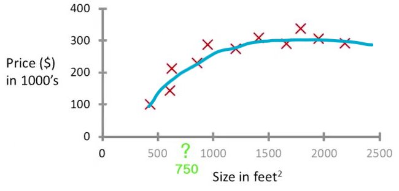
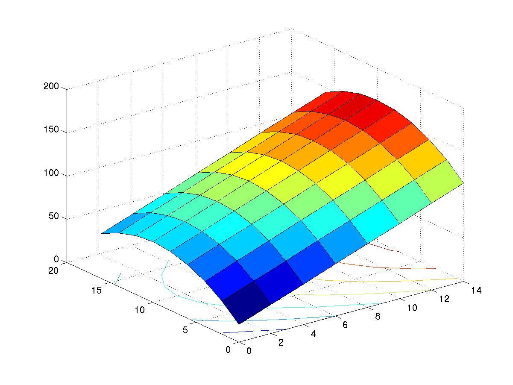
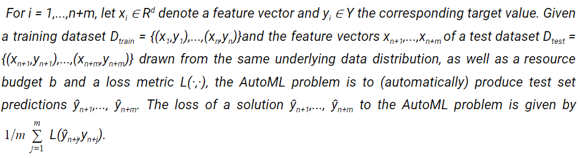
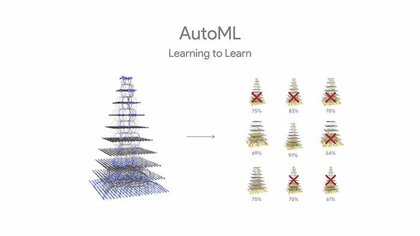

This was originally written for MCUG Newsletter, April’18. It did not end up getting published
Yep, you read that right. AI that writes its own AI. AutoML (automated machine learning) is a neural network that designs other neural networks. Sundar Pichai showed AutoML at the 2017 Google I/O. According to Google, it scored a record 82 percent prediction accuracy in correctly classifying images by their content. And, in the task of marking the location of multiple objects in an image, it scored 43 percent compared to 39 percent by the best human-built system.
Now, why would A.I researchers want to build machines which would replace them? According to Pichai, there is a need of AI systems whereas the availability of AI researchers is scarce. And, Google wants to enable developers to harness power of AI. In fact, as the demand for machine learning applications is growing, this will enable many novices to use machine learning for their applications.
So, how does an automated machine learning work? To understand this, first we need to understand what is it that a machine learning expert deals with. Given a dataset, a machine learning expert has to select its features. To elucidate this, I will take a simple example of predicting house prices in an area. Consider that you have data about all the accommodations available near MIT and you want to predict the rent of an accommodation given certain inputs such as the number of rooms. The data may contain features such as the number of rooms, floor area, rent, floor on which it is located, etc. Now, features need to be extracted from this data to make the machine learning model. You may select floor size and number of rooms as the input parameters and predict the rent. You might think that the floor on which it is located does not matter in considering the rent amount. Thus, you have extracted features from the data. Next, the machine learning expert has to select the right model on which to train the data on. In this case, we can take the model as a simple polynomial function and vary (the machine learning algorithm will automatically select) the coefficients to fit the curve according to the data. Here, the training involves figuring out the right coefficient for each of the power of x in the polynomial expression. To train the model, the data is generally split into a training dataset and a test dataset. We train the model with the training dataset and check its accuracy with the test dataset. So, back to the prediction problem. Since we have two features as input and the prediction (rent) as output, the total dimensions will be three. We can then plot this data on a 3D space as a topology mesh. To make this easier to imagine, let’s reduce the input features to one. Thus we will get 2D graph; one axis representing input and the other axis representing output. Thus, the model we train will either be a line or a polynomial curve depending on the dataset and the model we choose to represent it with. So, on one axis you have the floor size and on the other, you have the rent. Now, if a prediction is to be made on the data (in this case the floor size) then, for the given floor size a corresponding rent value can be figured out by the coordinate of the point on the curve. Now, this is just a basic example and might not lead to an accurate prediction in the real world. But, hey! I did not claim to be an expert.
 
As you can see the machine learning expert has to select features from the dataset and as the number of features increases so does the complexity; as can be seen from the example with 2D and 3D plots.
Next, a model is selected based on the data. For datasets like stock prices and house prices, linear regression or polynomial regression are sufficient. And, for image recognition, neural nets are employed. Also, these aren’t the only models available and each model further requires optimization for the given task. Finally, different training methods are used to train for the data sets, for example, reinforcement learning. (Note: Reinforcement Learning and Neural Nets were covered in the previous issues of MCUG Newsletter.)
An AutoML algorithm does all this task on its own. It selects features, creates an optimized model and trains on dataset given. In case you are wondering how an automated machine learning algorithm is formally defined - here you go:
 
So, how does the Google’s AutoML work? There is a controller neural net (the main neural net) which proposes a “child” model architecture (which is also a neural net), which is trained and evaluated for quality on a particular task. The feedback is then used to inform the controller how to improve its proposals for the next round. This process is repeated thousands of times. Eventually, the neural nets which perform the best on the given data set are created. In short, the controller creates various neural nets that are tested. The controller then selects the best neural nets from them and uses these to create other neural nets. This follows the reinforcement learning approach. And finally, a model is created which can be applied to the data and used by the developer for his/her application.
Conclusion
Automated machine learning has a lot of scope in the future. Given that it has created better AI in some cases than human experts, it is possible that its use will increase across all industries. There is also the exciting possibility that any layman will be able to harness the power of AI using this technology. Increasingly, many researchers outside Google are also working on it. The future of automated machine learning sure looks bright.
References
http://papers.nips.cc/paper/5872-efficient-and-robust-automated-machine-learning.pdf https://www.wired.com/story/googles-learning-software-learns-to-write-learning-software/googles-learning-software-learns-to-write-learning-software/](https://www.wired.com/story/googles-learning-software-learns-to-write-learning-software/) https://www.youtube.com/watch?v=92-DoDjCdsY https://research.googleblog.com/2017/05/using-machine-learning-to-explore.html https://research.googleblog.com/2017/11/automl-for-large-scale-image.html [https://cdn-images-1.medium.com/max/800/1ikLN7U7umV3O7SN_0IGxqw.jpeg](https://cdn-images-1.medium.com/max/800/1ikLN7U7umV3O7SN_0IGxqw.jpeg) https://are.berkeley.edu/~pberck/EnvEcon/bressler_surface.jpg
{kind=link}